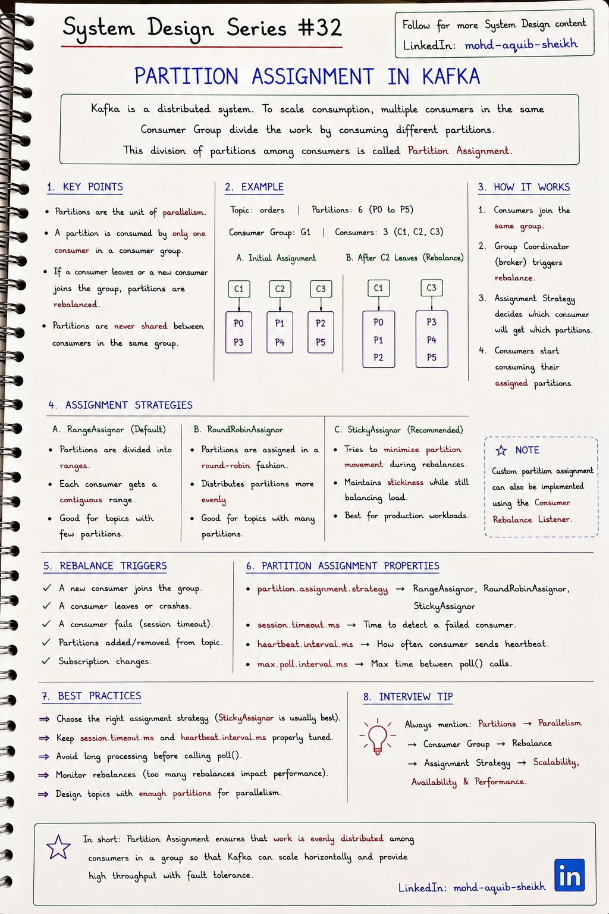
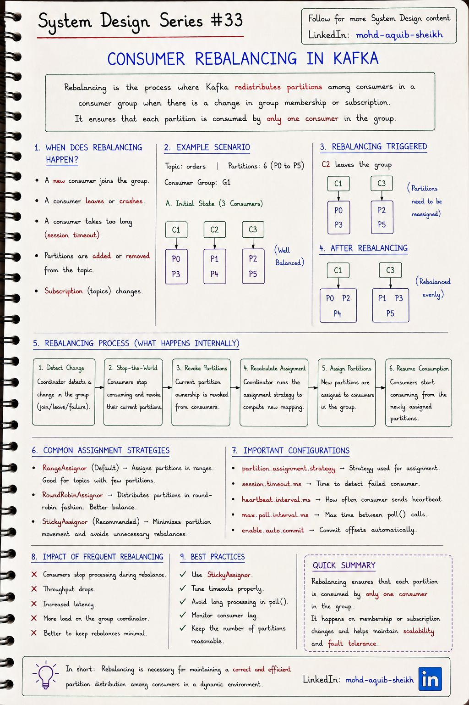
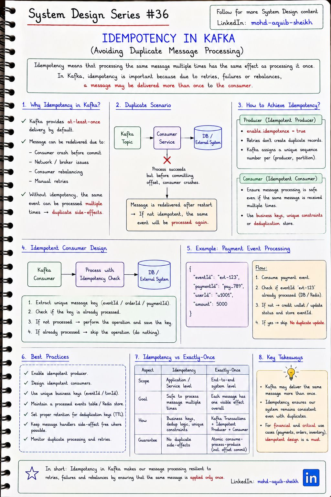

Kafka: потребители
Большинство проблем с Kafka в продакшене — на стороне потребителя: кто какую партицию читает, что происходит, когда состав группы меняется, и почему одно и то же сообщение приходит дважды. Три конспекта отвечают на эти вопросы по порядку.
13.1Распределение партиций#32
Потребители одной группы делят партиции топика между собой: каждая партиция достаётся ровно одному потребителю группы. Это и есть механизм масштабирования чтения в Kafka — и его предел.


| Стратегия | Как распределяет | Особенность |
|---|---|---|
| RangeAssignor | По каждому топику отдельно: непрерывные диапазоны партиций | При подписке на несколько топиков первые потребители получают больше — перекос. Зато одноимённые партиции разных топиков у одного потребителя (удобно для соединений) |
| RoundRobinAssignor | Все партиции по кругу | Равномерно, но при любой перебалансировке почти все партиции меняют владельца |
| StickyAssignor | Равномерно, сохраняя прежние назначения насколько возможно | Меньше перемещений — меньше потерянных локальных кэшей и состояния |
| CooperativeStickyAssignor | То же, но перебалансировка инкрементальная | Потребители не останавливаются целиком — рекомендуемый выбор сегодня |
- Четвёртой стратегии на конспекте нет, а она важнее остальных:
CooperativeStickyAssignorустраняет полную остановку группы при перебалансировке (см. 13.2). Конспект рекомендуетStickyAssignor— сегодня рекомендуют его кооперативный вариант. - Пример «Initial Assignment» (C1: P0, P3; C2: P1, P4; C3: P2, P5) соответствует round-robin, а не стратегии Range, подписанной как «по умолчанию». Range дал бы C1: P0, P1; C2: P2, P3; C3: P4, P5.
- Новый протокол групп (KIP-848, доступен с Kafka 4.0) переносит распределение на брокер: потребители получают назначения постепенно, без общей остановки, а клиентская настройка стратегии становится не нужна.
13.2Перебалансировка группы#33
Перебалансировка (rebalance) — перераспределение партиций при изменении состава группы или подписки. Она необходима для отказоустойчивости: партиции упавшего потребителя должен кто-то подхватить. Но пока она идёт, обработка стоит.


Что её вызывает: потребитель присоединился (запуск, масштабирование), вышел штатно или упал, перестал отправлять heartbeat, слишком долго не вызывал poll(), изменилось число партиций или подписка.
Eager — «остановить мир»
- Процесс с конспекта: все потребители отдают все партиции.
- Координатор пересчитывает распределение.
- Партиции выдаются заново.
- Группа простаивает целиком, даже если переехать должна была одна партиция.
Cooperative — инкрементальная
- Потребители продолжают читать свои партиции.
- Отзываются только те, что меняют владельца.
- Два коротких раунда вместо одной полной остановки.
- Включается стратегией
CooperativeStickyAssignor.
Три таймаута, которые путают чаще всего
| Настройка | По умолчанию | Что контролирует |
|---|---|---|
heartbeat.interval.ms | 3 с | Как часто фоновый поток сообщает координатору «я жив» |
session.timeout.ms | 45 с | Сколько координатор ждёт heartbeat, прежде чем считать потребителя мёртвым. Ловит падение процесса |
max.poll.interval.ms | 5 мин | Максимальная пауза между вызовами poll(). Ловит зависшую обработку |
session.timeout.ms не нарушает. Её ловит max.poll.interval.ms: потребитель получил 500 записей, обрабатывал их дольше 5 минут — исключён из группы. Его партиции переданы другому, который получает те же записи, тоже не успевает — и так по кругу, с дубликатами на каждом витке. Лечение: уменьшить max.poll.records, ускорить обработку или вынести её из потока опроса, увеличить max.poll.interval.ms под реальное время пакета.
- Статическое членство (
group.instance.id): потребитель с постоянным идентификатором при перезапуске возвращается на свои партиции без перебалансировки, если успел до истеченияsession.timeout.ms. Незаменимо при поочерёдном перезапуске подов в Kubernetes. - Зафиксируйте смещения перед отдачей партиций: иначе новый владелец начнёт с последнего зафиксированного и повторит обработанное. В Spring Kafka это делает контейнер; в «сыром» клиенте —
ConsumerRebalanceListener.onPartitionsRevoked. - Наблюдайте частоту перебалансировок и consumer lag — рост отставания при стабильном потоке записи означает, что потребители не справляются или постоянно перебалансируются.
13.3Идемпотентность обработки#36
По умолчанию Kafka даёт гарантию at-least-once: сообщение будет доставлено, но, возможно, не один раз. Повторы — не редкая авария, а нормальное следствие сбоев, повторных отправок и перебалансировок. Значит, обработка должна быть идемпотентной: повтор не меняет результат.


Откуда берутся дубликаты
| Где | Сценарий | Чем закрывается |
|---|---|---|
| Продюсер → брокер | Запись сохранена, подтверждение потерялось, продюсер отправил повторно | Идемпотентный продюсер |
| Брокер → потребитель | Обработка выполнена, потребитель упал до фиксации смещения; после перезапуска запись читается снова | Идемпотентный потребитель |
| Перебалансировка | Партиция перешла к другому потребителю раньше, чем прежний зафиксировал смещение | Идемпотентный потребитель |
| Приложение-отправитель | Сервис сам отправил одно событие дважды (повтор запроса, ретрай задачи) | Идемпотентный потребитель по бизнес-ключу |
Идемпотентный продюсер (enable.idempotence=true, включён по умолчанию с Kafka 3.0): брокер выдаёт продюсеру идентификатор, а каждая запись получает порядковый номер в рамках партиции. Повторную отправку с уже виденным номером брокер отбрасывает. Это закрывает только первую строку таблицы: защита действует в пределах одной сессии продюсера и ничего не знает о дубликатах, созданных самим приложением.
Идемпотентный потребитель
- Извлечь из сообщения уникальный идентификатор:
eventIdили бизнес-ключ (paymentId). - Проверить, обработано ли оно уже.
- Если нет — выполнить операцию и запомнить идентификатор.
- Если да — пропустить и зафиксировать смещение.
INSERT INTO processed_events (event_id) VALUES ('evt-123'); -- дубликат => нарушение UNIQUE => откат, пропуск
UPDATE wallets SET balance = balance + 5000 WHERE user_id = 'u1001';
COMMIT;
- Естественно идемпотентная операция. «Установить статус = PAID» безопасно повторять; «увеличить баланс на 5000» — нет. Иногда достаточно переформулировать событие: передавать итоговое состояние вместо изменения.
- Условное обновление по версии.
UPDATE … WHERE id = ? AND version < :eventVersion— устаревшие и повторные события просто не изменят строку.
Как от «не менее одного раза» перейти к «ровно один раз» средствами самой Kafka — в следующей теме. Та же идея для HTTP-запросов — в теме 04.
13.4Интерактив: группа потребителей и перебалансировка
Попробуйте: добавьте двух потребителей в режиме eager и посмотрите, сколько партиций сменили владельца; повторите в режиме cooperative. Затем добавьте седьмого потребителя.
13.5Самопроверка
В топике 4 партиции, в группе 6 потребителей. Сколько из них получают сообщения?
- 6
- 1
- 4 — партицию в группе читает ровно один потребитель; двое простаивают
- Ни один
Потребитель обработал сообщение и упал до коммита offset. Что произойдёт после перезапуска?
- Сообщение потеряется
- Сообщение будет прочитано и обработано повторно — at-least-once
- Kafka удалит партицию
- Offset закоммитится автоматически
Как сделать обработку идемпотентной?
- Хранить идентификаторы обработанных сообщений (уникальный ключ) в одной транзакции с результатом, либо делать операцию естественно идемпотентной (upsert)
- Увеличить число партиций
- Включить автокоммит
- Использовать acks = 0
В топике 4 партиции, в группе 6 потребителей. Как распределится работа?
Четыре потребителя получат по одной партиции, двое останутся без работы — в горячем резерве на случай отказа. Увеличить скорость обработки добавлением потребителей сверх числа партиций нельзя.
Чем session.timeout.ms отличается от max.poll.interval.ms?
Первый следит за heartbeat из фонового потока и обнаруживает умерший процесс или потерю сети. Второй следит за интервалом между вызовами poll() и обнаруживает живой процесс, у которого зависла или затянулась обработка. Раздельные механизмы нужны, чтобы долгая обработка не выглядела как смерть, а зависший обработчик не удерживал партиции вечно.
После каждого деплоя сервис-потребитель несколько минут ничего не обрабатывает. Что происходит и как уменьшить эффект?
Каждый перезапускаемый экземпляр вызывает перебалансировку — сначала при выходе, затем при входе; при eager-протоколе на это время останавливается вся группа. Меры: CooperativeStickyAssignor (останавливаются только перемещаемые партиции), статическое членство group.instance.id (быстрый перезапуск не вызывает перебалансировку вовсе), корректное завершение потребителя.
Идемпотентный продюсер включён. Почему потребитель всё равно может получить сообщение дважды?
Идемпотентный продюсер устраняет дубликаты только от повторной отправки в рамках одной сессии продюсера. Повторная доставка возникает на стороне потребителя: обработал, упал до фиксации смещения, после перезапуска или перебалансировки прочитал ту же запись. Кроме того, приложение-отправитель могло само отправить событие дважды — для брокера это два разных сообщения.
Почему хранить признак «обработано» в Redis, а данные в PostgreSQL — ненадёжно?
Нет общей транзакции. Обновили базу и упали до записи в Redis — повтор выполнит операцию второй раз. Записали в Redis и упали до обновления базы — повтор будет пропущен, операция потеряна. Запись признака в ту же базу в одной транзакции с бизнес-изменением делает оба шага атомарными.